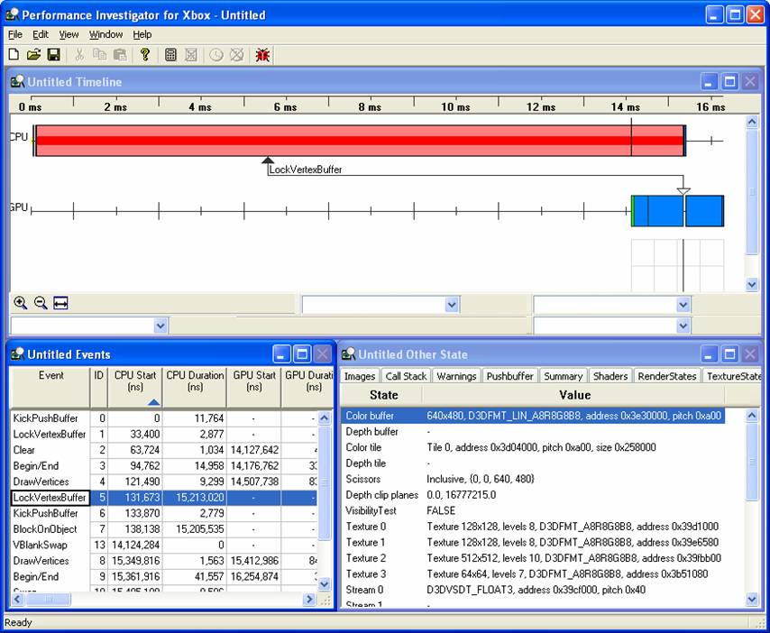
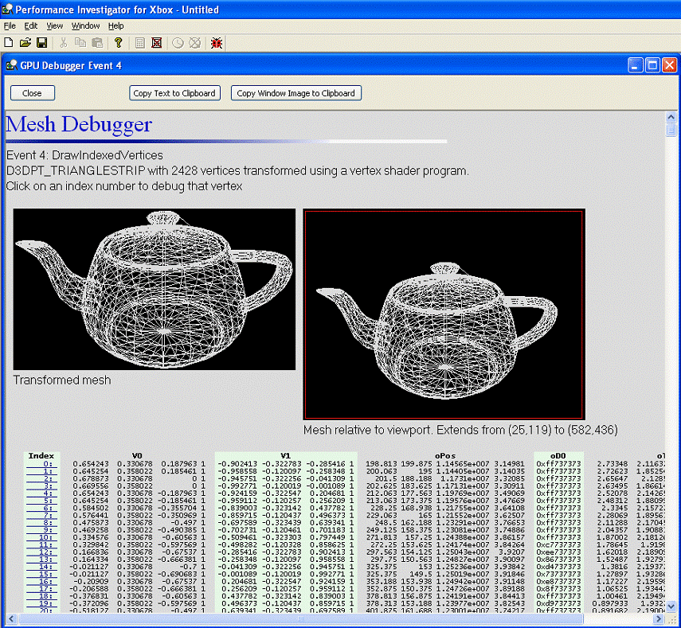

By Bruce Dawson, Xbox Advanced Technology Group
The Xbox® Development Kit comes with powerful profiling tools and functions. If you learn how to use these effectively, your title will almost certainly run faster.
This paper contains tricks and techniques based on the experiences of the Xbox Advanced Technology Group (ATG) doing developer visits and performance reviews of dozens of games. These techniques let us find performance problems, and we're hoping to put ourselves out of a job by revealing these secrets to all Xbox developers. All of these techniques are easy to use—frequently just requiring a couple of lines of code—and will reveal critical internal details of your game's performance on the Xbox.
This paper contains detailed descriptions of how and why to use these techniques, and we've included some profiling support classes to make using the profilers as easy as possible.
To profile effectively, you need to set up build configurations specifically for profiling. These builds should be optimized and as similar as possible to the final release build.
Many games have their own profiling systems that they leave enabled in the profile builds. Occasionally, these use enough CPU time to distort the results of the Xbox profilers. To ensure that your profiling code is not slowing your code significantly, you should have profile builds that have all of your profiling and cheat codes compiled out.
One of the differences in your profile configurations is the libraries you link with. You should add xbdm.lib to your link line to enable the CPU profiling functions, and you should replace d3d8.lib with d3d8i.lib for PIX compatibility and to enable the GPU profiling functions.
Your profile build should have a special preprocessor define, such as PROFILE. This lets you selectively include a few bits of code that you may not want in your release build.
Another difference in the profile configuration is that vertical-sync should be disabled. If your swaps are synchronized to the vertical-blank then it's possible to do substantial optimizations without having any effect on the frame rate. Disabling vertical-sync allows small improvements to be measured reliably, because your frame time is not forced to a multiple of 16.6 ms. You can use the PROFILE define to decide when to set the presentation interval to D3DPRESENT_INTERVAL_IMMEDIATE.
Creating new configurations is easy if the original configurations use the macros $(IntDir) and $(OutDir) to specify their intermediate directories and output directories, because these settings won't need adjusting in the new configuration. Projects that are newly created with Microsoft® Visual C++® .NET use these macros wherever appropriate, but projects that are upgraded from VC++ 6.0 may not.
In addition to creating a regular profile build, you should create a Profile_FastCap build. This should be identical to your regular profile build but with the /fastcap switch set in the compiler options, by adding it to the command line. In the VC++ 2002 IDE, there is a FastCAP option in the Advanced category, but this option was removed in VC++ 2003. The /fastcap switch tells the compiler to instrument the generated code in order to record the time on entering and exiting each function. This information can be used by XbPerfView to view the execution history of your program. See the XbPerfView section for more details. Profile_FastCap should be a separate configuration because the instrumentation slows the code down enough to make it unsuitable for profiling with other tools.
You should also have a Release_LTCG configuration for Link Time Code Generation—also known as Whole Program Optimization. This should be separate from the other configurations because the build times are substantial and can dramatically affect productivity.
To get best results, it is important that any libraries you significantly depend on should support these different configurations. Debug and Release versions are obviously critical, but LTCG, Profile, and Profile_FastCap configurations are also important. Libraries that use D3D should have a Profile configuration that hooks in to the profiling functions, and CPU-intensive libraries should have a Profile_FastCap version.
In summary, most projects—including those supplied by middleware vendors—should have the following set of configurations:
Since the Debug, Profile, and Profile_FastCap configurations are not intended for final release, the warnings about unapproved libraries are irrelevant, so you may want to disable them. You can do this by opening the project properties, going to the Xbox Image category, looking in the General section and setting Disable Library Warnings to Yes. These warnings should be left enabled for your release configurations.
See the SDK samples—starting with the November 2003 SDK—for examples of appropriate configuration setup.
To support profiling and debugging, it is important that you enable debug information for all configurations. If done properly, there is no disadvantage, and many advantages. These are the steps you should follow:
This third step is necessary because the linker optimizer is implicitly disabled when you enable debug information. If you don't explicitly re-enable the link optimizer, your executable may end up 20 to 30 percent larger, as unused and duplicate functions get pulled in.
Some developers erroneously believe that they should disable debug information for their final release build. This is incorrect. Enabling debug information does not affect optimizations. As long as you also enable the linker optimizer, debug information does not affect the executable size, except for about a hundred bytes to include the name of the .pdb file. Enabling debug information means that you can debug and profile your final release build. When you consider that the final release build—being the only one your customers will see—is really the only build that matters, it becomes obvious that the ability to diagnose and debug crashes and run the CPX profiler is critical. In addition, you should be sure to archive the .pdb file for your final builds, to ensure that you can diagnose any crashes that show up late in the development process or during certification.
Visual C++ .NET and later versions default to having debug information properly enabled in release builds. However, old projects that were migrated from Visual C++ 6.0 may have debug information disabled on release builds.
All of the Xbox profilers try to collect call stacks in order to present more useful information. Because they have to collect these call stacks very quickly—to avoid distorting the timings they are measuring—they can't do as aggressive a job of walking the call stack as the Visual C++ debugger can. Therefore, to get the best results from the profilers, it is important to get the compiler to generate code that uses stack frames, with EBP as a frame pointer. This is particularly important for PIX. Do this on all profile configurations, but not on final release configurations.
To do this, select all of your projects in the solution explorer. Then, bring up the properties window and select all your profile configurations. Then go to the C/C++ category, to the Optimization section, and set Omit Frame Pointers to No. This avoids explicitly requesting the omission of stack frame pointers. However, this is not sufficient. When full optimization is requested, the stack frame pointer omission optimization is implicitly enabled. Therefore, in addition to not explicitly requesting this optimization, you must also explicitly disable it. To do so, make sure all projects and profile configurations are selected, then go to the C/C++ category, then to the Command Line section, and add /Oy- to the command line.
Don't forget to select all projects and all relevant configurations when making this change.
If you are using third-party libraries without source, you may find that they have this optimization enabled, thus complicating your profiling. If so, you should request that they supply you with an optimized profiling build that has this optimization disabled.
The D3D libraries on Xbox include a profiling system that you can use to display occasional summaries of your game's performance, including average frame rate, worst frame time, and any stalls encountered. By default, this information is printed to the debug stream, viewable with XbWatson or the debugger. Enabling the profiling display is simple:
#pragma pack(push, 8) // Make sure structure packing is set properly #include <d3d8perf.h> #pragma pack(pop) //... #ifdef PROFILE D3DPERF_SetShowFrameRateInterval( 5000 ); #endif
This tells D3D to print out a performance summary every 5,000 milliseconds. Typical results look like this:
fps: 22.668 (44.114 ms/frame) frames: 114 time: 5029ms Min/max frame times: frame #112=40ms frame #13=54ms Vertices processed: 32904903 verts (288639 verts/frame) PushBuffer writes: 186759784 bytes (1638243 bytes/frame) Available RAM: 17316 kbytes Interrupts: 7854 Context Switches: 348
Any stalls will be displayed along with a count of how many times they happened, the average length of the stalls, and the average cost per frame. There are several different types of CPU stalls, or waits, that may be encountered. Some of the most common stalls are shown below.
fps: 59.788 (16.725 ms/frame) frames: 299 time: 5001ms Min/max frame times: frame #14=9ms frame #17=27ms PUSHBUFFER_WAITS (158): 1772.1ms (11.2ms/wait 5.9ms/frame)
In the example above, the CPU is spending an average of 5.9 ms per frame waiting for the push-buffer to empty enough so that it can submit more commands. The simplest solution to a push-buffer stall is to make the push-buffer larger—using IDirect3D8::SetPushBufferSize—so that it never completely fills up. This allows the CPU to get well ahead of the GPU, for maximum parallelism. It means that the CPU can submit a large number of draw commands and then go off and do other work—AI or physics, for instance—while the GPU processes the queued-up rendering commands.
fps: 462.215 (2.163 ms/frame) frames: 2312 time: 5002ms Min/max frame times: frame #1558=1ms frame #829=3ms OBJECTLOCK_WAITS (4624): 4840.8ms (1.0ms/wait 2.0ms/frame) CPUSPINDURINGWAIT_TIME (4624): 4822.6ms (1.0ms/wait 2.0ms/frame)
Object lock waits occur if you try to lock a resource such as a texture or a vertex buffer while the GPU is still using it. If you write to a vertex buffer every frame, you will frequently get these waits, because the CPU may try to lock the buffer before the GPU has finished rendering it for the previous frame. Double or triple buffering of vertex buffers, or avoiding writing to them, will avoid this problem.
fps: 761.47 (1.313 ms/frame) frames: 3806 time: 5001ms Min/max frame times: frame #2741=1ms frame #17=1ms D3DDEVICE_BLOCKUNTILIDLE_WAITS (3806): 4632.6ms (1.2ms/wait 1.2ms/frame) CPUSPINDURINGWAIT_TIME (3806): 4628.4ms (1.2ms/wait 1.2ms/frame)
Block-until-idle waits happen when you call BlockUntilIdle or when D3D calls it for you. In some cases, such as when a resource was used in a recent draw call, locking an object may result in D3D calling BlockUntilIdle for you.
fps: 789.242 (1.267 ms/frame) frames: 3947 time: 5001ms Min/max frame times: frame #2061=1ms frame #8=1ms PRESENT_WAITS (3947): 4671.3ms (1.1ms/wait 1.1ms/frame) CPUSPINDURINGWAIT_TIME (3947): 4666.8ms (1.1ms/wait 1.1ms/frame)
A present wait means that the CPU had to wait in the Present call. This happens when the CPU is two frames ahead of the GPU; D3D makes the CPU wait in order to stop it from getting further ahead. One reason this might happen is if your game is GPU bound, in which case the CPU will gradually pull ahead. If that is the case, these stalls don't need to be fixed. The other reason they might happen is if you have the presentation interval set to something other than D3DPRESENT_INTERVAL_IMMEDIATE, thus forcing the GPU to wait for the vertical-blank. Remember that, when profiling, you should use D3DPRESENT_INTERVAL_IMMEDIATE so that you can see your true frame rate.
Avoiding stalls is very important. A stall means that the CPU has stopped working, which is a waste. While the CPU is stalled, the GPU is emptying the push-buffer, which means it is quite likely that it will run out of work before the CPU can submit more commands. Then you end up with both processors spending part of their time idle. Avoiding stalls is the best way to ensure full parallelism and maximum performance on the Xbox.
SetShowFrameRateInterval tells you that you have stalls, but it doesn't tell you where they are. One way of investigating them is to do a PIX capture. It will show stalls with a horizontal bar on the timeline.
The other way to investigate stalls is to set up a wait callback using SetWaitCallback. Your function will be called whenever D3D is starting a wait. Within the callback, you can print out information, grab a call stack, or do a DebugBreak in order to find out why the stall is happening. You can call GetPushDistance to get an estimate of how long a stall it will be if you want to initially concentrate on the worst stalls. See the SDK documentation for more details.
XbPerfMon is a handy tool that gives a convenient overview of your application's frame rate, CPU usage, GPU usage, and other information. Because it graphs these values, you can easily observe trends as you play through your game.
Because XbPerfMon displays CPU and GPU usage, it is a handy way of finding which processor is the primary bottleneck. If you've set your swap mode to immediate, as recommended in the preparations section, then either the CPU or the GPU should be at 100 percent. Whichever one is at 100 percent is your bottleneck and is the one you should optimize first.
If the CPU is at 100 percent, you should use CPX and XbPerfView to try and optimize your CPU usage. If the GPU is at 100 percent, you should use PIX to try and optimize your rendering. In practice, you should look at both, but XbPerfMon tells you where to focus your attention.
If neither processor is hitting 100 percent, you have some stalls. You should look at the output from D3DPERF_SetShowFrameRateInterval to see information about the stalls, and double check that your present mode is set to immediate.
You can graph additional counters beyond the default three. Click on the plus sign on the toolbar, select Xbox from the list of Performance Objects, and then add the counter you are interested in.
If you select a counter you can highlight its graph with the light bulb button or view its values on the status line to more easily track it.
PIX is a unique and powerful profiling tool. PIX gives you detailed profiling information about your rendering, and it serves as a powerful rendering debugger and visualizer. It shows you your stalls and gives you an overview of your CPU usage. The analysis stage runs dozens of tests that help identify bottlenecks and inefficiencies. If you use PIX to look at your rendering, you will inevitably learn things about your code that lead to valuable improvements.
The first step in using PIX is getting it to record data reliably. This requires some care because PIX works by doing a two-pass data capture. On the first pass, it records timing data for every D3D call. This step is designed to have minimal overhead so as not to affect the timing. On the next frame, PIX records more detailed information about each D3D call. On this second pass—the push-buffer capture pass—PIX captures all of the data sent to the push-buffer, plus all textures, vertex buffers, and render targets.
For this to work, the game has to render two identical frames in a row—or at least have identical D3D calls. Otherwise, the two captures will not match and PIX will not be able to merge the data sets. PIX provides a function to help games do this—D3DPERF_QueryRepeatFrame. This function normally always returns FALSE, but it will return TRUE when PIX needs the game to repeat the last frame—that is, when doing a push-buffer capture after doing a timing capture. When this flag returns TRUE, it is important not to make any changes that could result in altering what is rendered. Possible ways of using this function include:
void DoFrame()
{
// Update AI, physics, etc.
UpdateWorld();
// Render the scene and do a swap.
RenderWorldAndSwap();
// Redraw the frame if PIX needs that
if ( D3DPERF_QueryRepeatFrame() )
RenderWorldAndSwap();
}
or:
void Render()
{
do
{
if ( !D3DPERF_QueryRepeatFrame() )
{
// Only move on to rendering the next set of environment
// map faces if this is not a PIX requested repeat frame.
environmentMapFace += kEnvFacesPerFrame;
environmentMapFace = environmentMapFace % 6;
}
RenderEnvironmentMap();
RenderSky();
RenderBuildings();
RenderCharacters();
Render2D();
Swap();
// Repeat the loop if PIX requests a repeat.
} while ( D3DPERF_QueryRepeatFrame() );
}
Some developers have found that they can get a good PIX capture by pausing their game, but this is not ideal. When the game is paused, the balance between CPU and GPU usage is altered, which can hide stalls or otherwise complicate the analysis. For most titles, it is relatively easy to use QueryRepeatFrame to get reliable captures during gameplay.
Following are some of the things that we've found games doing that cause synchronization problems during PIX captures:
Most of these synchronization problems can be fixed easily. However, it is sometimes difficult to track down what is causing the problem. One useful piece of information when trying to track down synchronization errors is in the dialog box that PIX displays when the timing and push-buffer captures are not synchronized. This dialog box displays which event number the two captures diverged on, and what type of event occurred for that event in each capture. By looking around that location in the timing capture, it is often possible to find the culprit.
If it's still not clear where the deviation is coming from, try doing a series of timing captures. Export the results to .csv files, strip off all but the first two columns, and use WinDiff to discover what is changing. The differences between the events captured for different frames, together with the call stacks for those events, should give you all the information you need.
If this still doesn't work, or if multiple timing captures are all the same, you probably have a bug in your code that handles QueryRepeatFrame. Check to make sure that you are repeating all of your rendering code, including the final swap.
PIX is still useful without synchronized timing and push-buffer data, but it's at its best with both captures.
If you aren't getting good call stacks when you do PIX captures, be sure to follow the steps listed in the General Preparations section to disable the frame pointer omission optimization.
If you have a thousand D3D calls in your frame, a raw PIX capture is going to be an intimidating grid of data. This data is much more manageable if you label groups of events. Doing this lets you find events of interest, and lets you collapse the hierarchy to make it more manageable.
D3DPERF_BeginEvent and D3DPERF_EndEvent can be used to hierarchically label your frame loop—both your rendering code and any other functions that use significant CPU time. To label a function, you need to call D3DPERF_BeginEvent at the beginning of your function and then call D3DPERF_EndEvent at every exit from the function. To make sure that the function calls are optimized out of your final release build, you need to wrap these calls in some sort of #if directive.
Alternatively, you can use a C++ class to make this much simpler. The constructor can call D3DPERF_BeginEvent, and the destructor can automatically call D3DPERF_EndEvent. With the destructor taking care of the EndEvent call, you don't need to worry about missing one of the exits from your function. With all of the calls hidden inside of the class, you don't need to worry about putting #if directives in your code—you can put them inside the class definition instead. Therefore, adding a profiling block requires just a single line of code to declare a temporary CXBBeginEventObject. An extra set of braces will sometimes be needed to restrict the scope of the object, but it is still a simple and safe way to add these important profiling calls.
Typical usage of CXBBeginEventObject would look like this:
VOID RenderEntities()
{
// All entity rendering will collapse down to one entry in PIX
CXBBeginEventObject entitiesProfiler( "RenderEntities" );
for ( DWORD i = 0; i < entities.count(); ++i )
{
// Each individual entity render will collapsed down to one sub-entry in PIX
CXBBeginEventObject entityProfiler( "RenderEnt %s", entities[i].GetName() );
entities[i].Render();
}
}
When using CXBBeginEventObject, you must remember to give your CXBBeginEventObject variable a name. If you omit the entitiesProfiler or entityProfiler variable name from the code above, you are creating an unnamed C++ object that will be destroyed immediately after its creation, instead of lasting to the end of the scope.
Labels make the PIX data more manageable and easier to comprehend. You can divide your scene into characters, terrain, sky box, and so on. You can also label individual characters by number or name. If you wrap your AI and world update code in BeginEvent/EndEvent, PIX can give you an overview of your CPU usage as well as GPU profiling information.
After doing a PIX capture, you should run the analysis application. This fills in the extra columns with information about each rendering call, and it enables the image display, pixel debugger, warnings, and many other features. After you've done an analysis, you can save the PIX file and the extra information will be retained.
There are many problems that you can find using PIX, but there are a number of mistakes that are common enough that they have been turned into PIX warnings. Therefore, the first thing you should do with a PIX capture is run the analysis application and look at the warnings tab. The level-three warnings are sometimes spurious, but look carefully at the level-one and level-two warnings.
Some of the interesting warnings that we frequently see include:
Multisample rendering repeats the pixel shader results across multiple pixels, while generating correct stencil and Z values. So if you aren't using the pixel shader results—that is, if you're doing depth or stencil only rendering—you can use multisampled rendering with no loss of quality. If you use 4× multisampling, the Xbox can potentially render sixteen pixels per clock instead of the normal four. The actual speedup will be less because of memory bandwidth limitations, but it's still a powerful optimization. PIX will suggest this optimization only if you are not using the pixel shader results, but you can use this optimization any time that there is little or no detail in the color data you are drawing.
If you do a full screen effect using a full screen quad—two triangles—the Xbox GPU will not make full use of its memory bandwidth and parallel rendering pipelines when it is rendering the diagonal edges of the triangles. Instead, you should render using a single triangle that is large enough to cover the entire screen. The off-screen parts will be clipped for free, and the on-screen parts will render faster.
This warning is not actually a graphics warning, it's a CPU warning. If you use the x87 FPU for floating-point math, all operations, by default, are done at double precision—even if all the parameters are floats. Divides and square roots take 70 to100 percent longer if done at double precision instead of float precision, and the extra precision is mostly wasted if all your variables are floats. You can avoid this penalty either by using SSE for your floating-point math, or by setting the x87 FPU precision to float, as shown in the warning. We recommend doing both. The call to _controlfp sets the x87 FPU to float precision for the current thread.
If you clear Z but not stencil, the Clear call runs slower and depth compression works poorly. See the Depth-Buffer Compression and Performance Implications white paper for details.
This warning lets you see exactly how much redundant state you are placing in the push-buffer, which can help you decide whether to try optimizing your state changes. It isn't possible to avoid all redundant state, and it rarely affects the GPU significantly, so you should optimize this only if you are CPU bound and think you can detect redundant state changes more efficiently than you can set them. Typical values for the GPU cost of redundant state (the first percentage) are around 0.9% to 3.2%. Typical values for how much smaller the push-buffer would be with no redundant state are between 12% and 47%. Remember that PIX does not measure the CPU cost of putting the redundant state in the push-buffer.
Frustum culling will never be perfect, but this gives you an idea of how far from perfect you are. The savings amount is calculated by adding the back-end times for all draw calls with a pre-occlusion cull pixel count of zero. Typical speed improvement percentages for this warning are around 5.0% to 13.8%. Remember that PIX does not measure the CPU cost of making these zero-pixel draw calls.
PIX will graphically display CPU stalls in the timeline view, which can be a useful way of tracking down when and why they happen. Stalls are shown by putting a horizontal bar through the events. In the screen capture below, there is a BlockOnObject stall caused by a call to LockVertexBuffer.
In the events window, you'll see four overlapping events related to this stall. The first call is LockVertexBuffer, which takes 15.2 ms. Next is a KickPushBuffer call made by LockVertexBuffer; this is done because it is important to submit all pending commands to the GPU before waiting for a resource, to avoid deadlocks. The third call is BlockOnObject. This is the function that waits for the resource. Note that the stall duration shows up in the LockVertexBuffer call as well as the BlockOnObject call, because LockVertexBuffer calls BlockOnObject. Finally, there is a VBlankSwap event. The BlockOnObject stall is so long that a vertical-blank happens while the CPU is waiting. This is indicated in the timeline by a vertical line around 14 ms.

When optimizing, you naturally want to focus on the most expensive calls, since there is more room for benefit from optimizing these calls. These expensive calls are easily found by clicking on the GPU duration column to sort the results by how long they took. If this is done while the labeled events are collapsed, it will sort them as grouped events. If you want to sort the individual D3D calls by cost, right-click in the events window, select Expand All Events, and then sort.
Once you've found the expensive draw calls, you can try and decide why they are expensive. When you run the analysis application, PIX will tell you whether a draw call is texture bound or fill bound and will tell you the effective fill rate and ideal fill rate.
If the draw call is texture bound, you should ensure that mip-mapping is enabled and consider using texture compression or smaller textures.
If the draw call is fill bound, it is harder to fix. If the effective fill rate is substantially smaller than the ideal fill rate, your drawing may be memory bound. You should explore ways of reducing memory bandwidth, such as using increasing your alpha test value, avoiding z-reads and z-writes, and so on.
If your ideal fill rate is too low—remember, Xbox has a peak fill rate of 933 MPixels/s or higher when multisampling—you should look at your pixel shaders or texture fetch operations. If your pixel shader is more than two combiner stages long, your maximum fill rate will be cut by half, or more.
You can also try sorting by pixels drawn—post-occlusion cull pixel count. If most of your draw calls result in no pixels being drawn, you could benefit from better culling.
If CPU performance is an issue, try sorting by CPU cost, but keep in mind that the CPU profilers are better for any serious CPU profiling.
You can use the images tab in PIX to look at your overdraw, or switch the view to wireframe mode to check your vertex density. You can view your pixel shaders from within PIX to see if they are unexpectedly long. You can use the Other State tab to make sure you don't have unexpected textures set. To debug pixel shaders, you can use the pixel debugger: Just right-click on a pixel on the Images tab and select Debug this Pixel. To identify meshes that are causing problems, you can use the mesh debugger: Just right-click on an event and select Debug Selected Mesh.

Illustration PIX Mesh Debugger
You can use your labels, the Images tab, and the Call Stack tab to identify where you are in a capture. Type the name of the directory containing symbols in the Path to Symbol File area, and click Resolve Symbols to translate your call stack to a usable form.
Many games clear the color buffer as well as depth and stencil. You can check this in PIX by selecting the Clear event and looking in the push-buffer tab. If you're going to render to the entire screen, clearing the color buffer is unnecessary, and clearing the color buffer takes about four times as long as clearing depth and stencil. However, when looking at a PIX capture, it can be much more confusing if the color buffer isn't cleared. The previous scene's imagery makes it harder to tell what is going on. A handy technique to get the best of both worlds is to use the following code to clear your buffers:
if (D3DPERF_QueryRepeatFrame())
D3DDevice::Clear( 0, 0, D3DCLEAR_TARGET | D3DCLEAR_ZBUFFER | D3DCLEAR_STENCIL,
0, 1.0f, 0L );
else
D3DDevice::Clear( 0, 0, D3DCLEAR_ZBUFFER | D3DCLEAR_STENCIL, 0, 1.0f, 0L );
When the game is running normally or when PIX is doing a timing capture, just the depth and stencil buffer is cleared. However, when PIX is doing the push-buffer capture after a timing capture—when it grabs the textures, vertex buffers, and render target buffers—the color buffer is cleared also.
Sometimes a PIX capture will show the GPU doing a large batch of rendering, then stopping for a while, and then doing a final burst of rendering when Present is called. In other words, the GPU stops rendering, even though there is still work to do. This happens because the push-buffer data is submitted to the GPU only when a kick-off segment is filled or when KickPushBuffer is called. The last rendering commands in a frame won't get sent to the GPU until the Present call forces the issue. You can avoid this potential problem by calling KickPushBuffer or Present as soon as you are finished rendering.
PIX is a great profiling tool, but it can also be a great learning and debugging tool. If you're trying to debug your engine or get up to speed on how it works, spend some time looking at a PIX capture.
CPX is a sampling profiler. At regular intervals, it interrupts your program, samples the instruction pointer, and generates a call stack. It requires no instrumentation of your code, and it is the only Xbox profiler that can be run on your final release build—even your LTCG build. It can even generate call stacks on fully optimized code with frame pointer omission enabled. All it takes is debug information, which you should always have enabled.
Because CPX is a sampling profiler, it works best on relatively long runs—20 to 60 seconds, typically. This lets you record the general trends in your game, but it cannot be used to record profiling information for a single frame.
CPX presents the sampled data in a way that makes it easy to determine whether a function is expensive because of time spent directly within it (exclusive time) or whether the cost is from functions that it calls (inclusive time).
CPX lets you view the relevant source code for easier understanding of what is happening.
CPX does not let you see instruction level profiling information. It tells you only what function the samples are in, not where within the function.
FastCAP stands for the Fast Call Attributed Profiler. This is a fancy way of saying that this profiling option instruments your code to record the start and end time of every function.
The /fastcap compiler option instruments your code to record the entry and exit times of every function. The XbPerf tool can be used to record profile information from the command line, but the most effective way to use this profiler is to use DmStartProfiling/DmStopProfiling to record exactly one frame of data. The problem with using XbPerf to start/stop collection from the command line is that you lose control over what you are collecting. You don't know exactly what you have. For example, you might get half a frame of data and miss the most important information. Or you might get 1.5 frames of data and overemphasize something unimportant.
With sampling profilers such as CPX, you can tell what percentage of time is spent in a particular function, but you can't tell how many times that function was called. This makes it difficult to tell if a function is costing a lot because you call it a lot or because it takes a long time to execute. With FastCAP, you can easily distinguish because it tells you how many times each function was called and how much each function cost. If you use DmStartProfiling/DmStopProfiling to record exactly one frame of data, you know how many times each function is called per frame.
While doing a performance review, I noticed that the game's TransparencySortCmp function was taking about 6% of CPU time. My CPX capture gave me no clues as to why the compare function was taking so long. However, when I looked at a FastCAP capture, I found there were 367 calls to the insert function and 58,000 calls to the compare function. A good sort should do about (n log n) compares, but this sort was doing about 17 times that many. A little investigation showed that the binary tree was badly balanced, causing the sort to degrade to a fancy bubble sort! Once that was fixed, the TransparencySortCmp routine stopped being a significant factor on the profiles. With only a CPX capture, I might have wasted time optimizing the compare routine, when the insert routine was the real problem.
Whereas CPX is good for capturing long runs of your game—showing you general trends and long term CPU usage—FastCAP is best at capturing short runs, such as a single frame. Neither type of profiling is better; they are both useful.
If you are using third-party libraries without source, find out if they supply a version of their libraries compiled with this option. If not, you should request that they supply you with such a library.
FastCAP profiling is not perfect. It requires that you instrument your code, which means you need to change to a different configuration when you want to use it. The instrumentation makes your code run slower, even when not profiling. The overhead varies from 10 to 50 percent, depending on how many function calls you make.
FastCAP instrumentation can affect the in-lining decisions that the compiler makes so that sometimes XbPerfView will report thousands of calls to a one-line constructor that should have been in-lined. Watch for anomalous results like this, but don't be distracted by them.
See the General Preparations section for information on how to create a Profile_Fastcap build.
The simplest way to call DmStartProfiling/DmStopProfiling is by using a class to manage it. The CXBSimpleFastCapProfile class calls DmStartProfiling from its BeginProfiling function and automatically calls DmStopProfiling from its destructor, when necessary. It also takes care of checking for and reporting errors, and it adjust the buffer size to give you as long a capture as possible.
The only question left is how to trigger the profile. You could hook in a special button combination to trigger it, but a better way is to trigger it remotely, from your PC. XBProfiling_IsFastCAPRequested is a function that lets your PC request a FastCAP profile. You just have to set up your code like this:
CXBSimpleFastCapProfile profile;
if ( XBProfiling_IsFastCAPRequested() )
profile.BeginProfiling();
Then run the TriggerProfile tool (source supplied) from your PC. After a frame of data has been captured, you need to copy the file from xd:\results.cap (or from somewhere on xe:\ if your game is no longer running) to the directory that contains the .pdb file.
FastCAP captures can also be run in continuous mode. If you call DmStartProfiling every frame, but never call DmStopProfiling, the recorded data will be thrown away and a fresh capture started. This allows you to add code to the end of your frame loop that detects when a frame takes longer than expected, and retroactively record the profiling information for that frame, by calling DmStopProfiling.
The best tool for viewing FastCAP data is XbPerfView. When loading files into XbPerfView, you may get a warning saying "Logfile had out of order entry, writing fix to: results.cap_fixed and using it instead." These warnings are very common and can be ignored.
This tool lets you sort the data various ways (see the View menu). It lets you view the profile information as a sorted list, as an execution tree for each thread, or as a list of all function calls and context switches in order.
Sorting by exclusive time is the default and is useful for finding the functions that cost the most. Sorting by inclusive time can also be useful, but the first few entries will typically just tell you that your DoFrame function takes 100 percent of the CPU time.
Sorting by the number of calls is useful for identifying functions that are being called more frequently than expected.
You can copy the selected range of lines from the function list to the clipboard, and then paste this tab-separated data directly into Excel for further analysis.
For best results, XbPerfView needs the debug information in order to display function names. Therefore, if you want to retain a FastCAP capture, you need to keep the .pdb file as well.
I've included the source code for the classes and functions discussed earlier in the paper—CXBSimpleFastCapProfile, XBProfiling_IsFastCAPRequested, and CXBBeginEventObject. In addition, I've supplied a project for building the TriggerProfile executable, to communicate with the XBProfiling_IsFastCAPRequested function. See the accompanying sources and project for details.